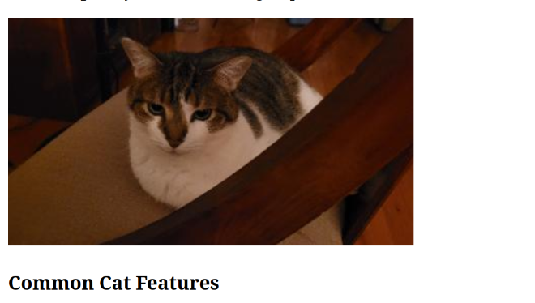
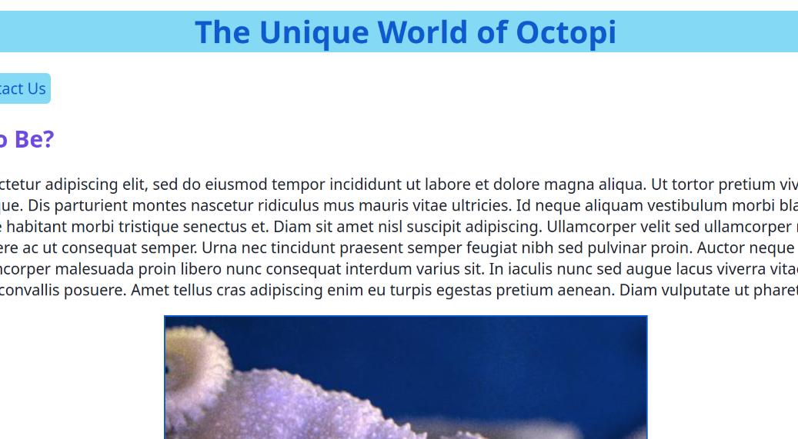
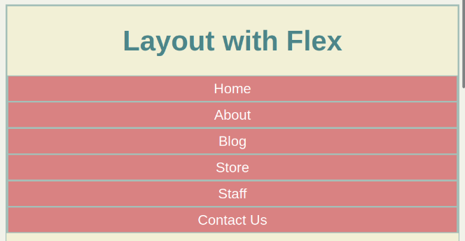
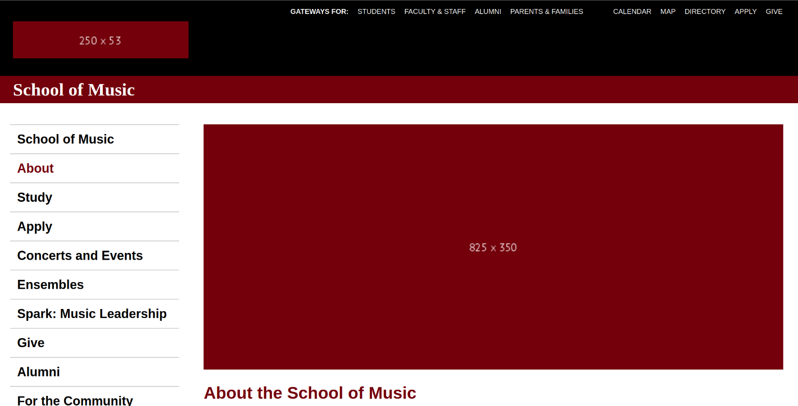
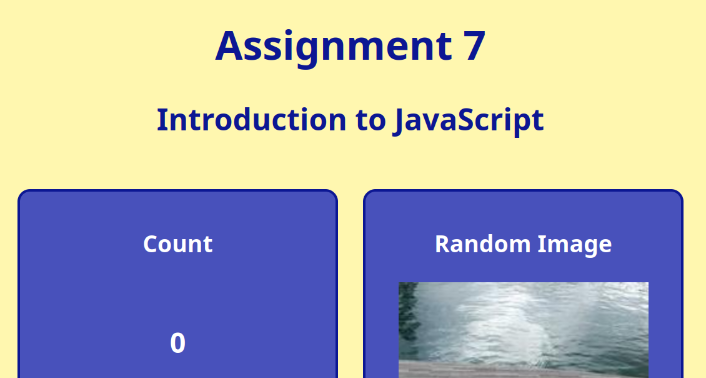
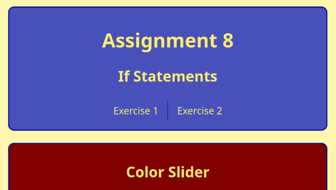

Assignments
Assignment 1: Basic HTML
Used foundational HTML to create a website page that includes header tags (h1, h2, h3), paragraphs (p), lists (ul), images (img), external links (a href), and a table.
Assignment 2: Basic CSS
Used CSS to stylize a website page with color and text decoration as well as aligned content using padding and margins.
Assignment 3: Page Layout
Used CSS Flexbox to recreate a website layout that can adapt to different window dimensions such as desktop and mobile screens.
Assignment 5: Recreate CSS
Used CSS Flexbox to recreate the UofSC School of Music's About page layout that can adapt to desktop and mobile screens.
Assignment 7: JavaScript, Buttons, Functions, and More
Used JavaScript to create a clickable counter, image randomizer when the page refreshes, and a slider that shifts a square to the right.
Assignment 8: Conditionals
Used JavaScript to create a toggable menu, a color slider with three different messages shown depending on slider value, and a picture chooser that modifies the image shown depending on what button is pressed.